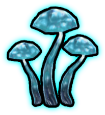
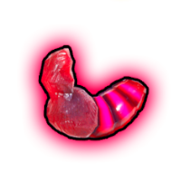
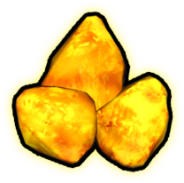
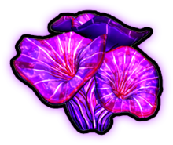

Resources
The currencies and pickups you collect during a run and spend on upgrades.

MyceliumThe primary in-run currency, earned by defeating enemies and from pickups. Spent in the shop on skill Morphs.

BiomassA secondary in-run resource used for higher-cost Morph purchases. Dropped by enemies and spawned by the Biomass interactable event.

AmberA secondary in-run resource used for higher-cost Morph purchases. Spawned by the Amber interactable event and granted by some artifacts.

Meta MyceliumA persistent currency collected from mushroom pickups during a run. Carries over between runs and is spent in the Hub to unlock new skills, maps, and characters.